What happens to resting BTC orders when price moves
An interim, descriptive read of 16 days of Hyperliquid's full order-by-order book: every order, every cancel, every fill, and the wallet behind each. It covers fast moves, breakouts, absorption, the wallets that supply liquidity, and whether anything visible in the book tells you where price goes next.
The short version
Most numbers here describe events chosen because of what price later did, so they explain the past rather than forecast it. A pre-registered test on the sealed half of the month is still running and can overturn any of this.
Provisional watch-list for a manual trader
Ordered by how consistently each observation held across sections and counter-examples, and by how directly it bears on your own orders. It is not a ranking by edge: no item showed a tradeable edge. Observability classes: A public feed in time, B-addr free per-address stream for ≤ 10 wallets, B-L4 needs a node or data vendor, C not knowable live.
| # | What to watch | Class | What it might mean | Support so far |
|---|---|---|---|---|
| 1 | Size displayed just ahead of price, most of all in a fast market | A | Far less will be there when price arrives. Fills and stop slippage will be worse than the book suggests. | Sizing & slippage only |
| 2 | One-sided tape bursts, sweeps, pokes through round numbers | A | The move has already happened. Every family nets about −9 bps as an entry at 2–5 s. | Against as an entry |
| 3 | A stop cascade: prints pulsing every ~3 s | A rhythm · B-L4 stop identity | Your own stops fill ~1.8 bps past the trigger (p95 ~11). Stops plus liquidations are a third of fast-move flow. | Execution only |
| 4 | Binance BTC perp moving first | A | HL tends to follow within ~0.7 s, which is below a manual reaction time. The HL event adds nothing beyond the Binance move. | Context only |
| 5 | The minute after a fast move | A coarse grid | Depth near price stays below normal for a minute or more (median 77 s to recover). | Sizing only |
| 6 | A single large order near price | A size · B-addr owner, flags | If price actually reaches it, it usually trades. Its pull says nothing about direction; absorption at it is 50/50. | Not supported as a hold cue |
| 7 | Up to 10 top quoter addresses | B-addr | A live map of where most near-touch size is and when it leaves. No "informed maker" was found. | Liquidity map only |
| 8 | Depth and resting stops beyond a range edge; the book at the first stall | A · B-L4 | Nothing that separated success from failure. | Against |
| 9 | Round numbers; repeated attempts at a level | A | Behaves the same as a placebo price like $x37. | Against |
| 10 | Blinking levels, flicker, pull bursts | A · B-L4 | Activity and quote churn, not direction. | Against as direction |
Descriptive evidence is not support for pre-trade use. The confirmatory track tests these ideas on the sealed half with registered trades, stops and fees.
The data in plain language
The source is the "Open Book" release by Albers, Cucuringu, Howison and Shestopaloff (Zenodo 18184441, CC BY 4.0). A non-validating Hyperliquid node wrote three streams. December 2025 is the one month where all three are complete. The BTC parts were joined so that every change to the book has a time, an order, a wallet and a cause.
| Stream | What it holds | December BTC |
|---|---|---|
| Order statuses | every order's life: placed, filled, cancelled, triggered, engine removals, rejections, each with the wallet | 834 M owner cancels |
| Book diffs | every change to the visible book, per order id | 1.70 B events · 27.7 M blocks |
| Trades | every execution, with both wallets, aggressor side, TWAP and liquidation markers | 11.9 M trades |
What it can and cannot tell us
- Can: whether each unit of size that left a price was filled, cancelled by its owner, or removed by the engine. The accounting balances exactly at every price.
- Cannot: why an order was cancelled. "Pulled" versus "re-posted nearby" is a label that depends on a time window: 54.5% of cancelled size counts as pulled at 500 ms, 18.1% at 2 s.
- Wallets are pseudonymous addresses. One operator can run many; a vault can pool many people. Behaviour is observable, purpose is not.
- Gaps: 15 data outages over 10 s in December (~6.3 h), despite the dataset's "no gaps" note. Every analysis drops windows that touch one.
What a trader could see live in December 2025
- The public book: 20 levels per side, a snapshot every ~0.54 s. At $1 grouping that is only about $20 (~2 bps).
- The trade tape: price, size, aggressor side and both wallets of every print.
- Free per-address streams for up to 10 chosen wallets, delivered in ~0.4 s.
- No public feed showed who owned each resting order.
- A pre-armed one-click reaction takes ~0.9–1.2 s. Fees at tier 0: 4.5 bps taker, 1.5 bps maker, so 9 bps for a taker round trip.
Why some things look like foresight
Inside each ~86 ms block, Hyperliquid runs post-only adds first, then cancels, then market and IOC orders. So a maker's cancel in the same block as a sweep always wins by protocol. Measured here: at a level, cancels precede takers in 99.995% of blocks, and queues fill first-come-first-served 99.88% of the time. The analysis counts a cancel as "ahead" of a print only if it came at least 3 blocks and 250 ms earlier.
Fast moves and thin levels
88 fast moves (mid ≥ 20 bps from its trailing 30 s mean; median 38 bps in 31 s) on 8 odd days, Dec 1–17, and 83 slow controls covering the same distance at least 5× slower. Brackets are day-block bootstrap 95% intervals.
Near the touch, most pulled size left well before the first print, and about half of it left before the move even started
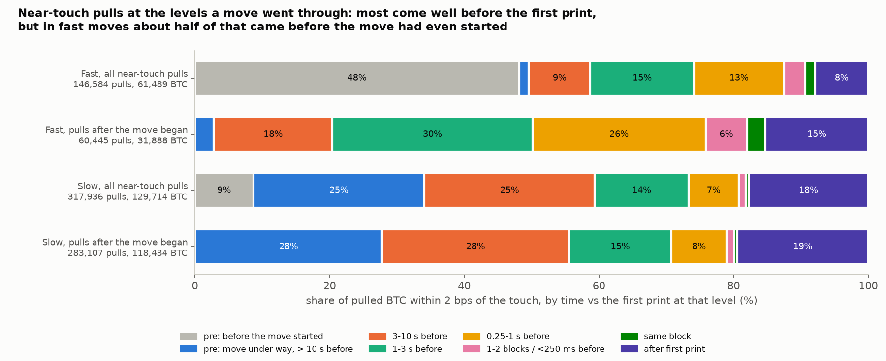
ObservationIn fast moves 87.5% of near-touch pulled size left ≥ 3 blocks and ≥ 250 ms before the first print, but 48% [46–51] of it left before the move started. Of the pulls made after the move began: 76% early, 6.1% in the last 1–2 blocks, 2.7% in the same block, 15% after the first print.
InterpretationMuch of "the liquidity vanished before it was hit" is ordinary churn that happened before anything moved. The in-move pulls are mostly early, which fits anticipation or a reaction to an earlier cue, not a same-block race.
B-L4 A public-feed trader sees only the net shrinking of a displayed level between snapshots, within ~2 bps.
"Pulled faster ahead of a fast move" is a per-second effect of price speed
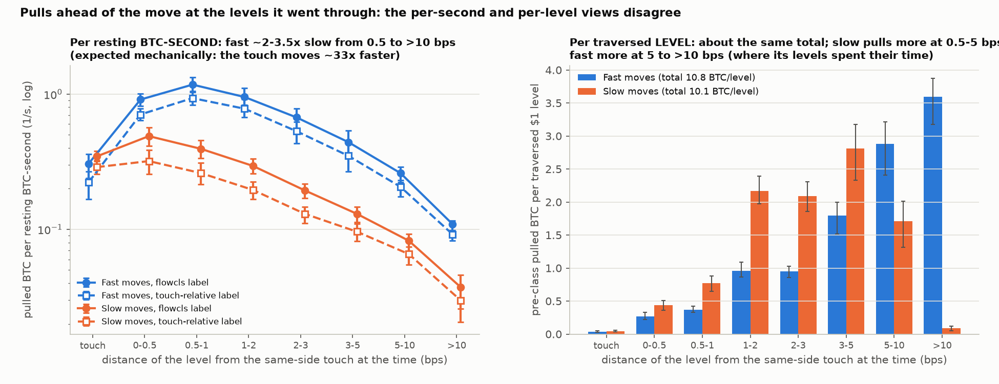
ObservationThe touch covers the same distance ~33× faster in a fast move. Per traversed level the total pulled ahead is 10.8 vs 10.1 BTC (ratio 1.07 [0.92–1.28]); per fast/control pair at 0.5–5 bps the median is 0.53.
InterpretationA quoter that keeps a fixed distance from the touch re-prices every time the touch moves. The book ahead of a fast move turns over faster; it is not emptied more per level.
What trades at a traversed level: fresh quotes from fast wallets, plus whatever slow wallets left resting
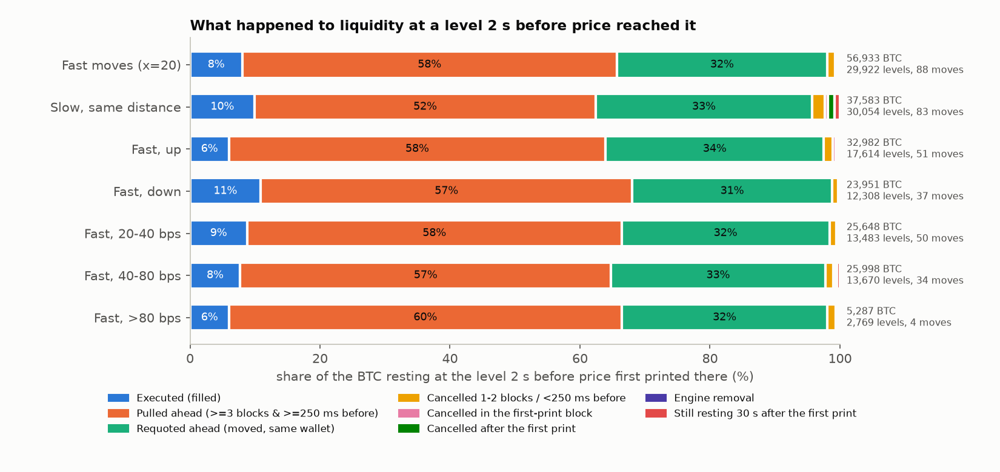
ObservationOnly 8.0% [6.2–10.3] of that size traded. The top-10 makers owned 58% of it and 1.9% of theirs traded; ~17k low-activity wallets owned 9% and 71% of theirs traded. Half of all fills at traversed levels came from high-frequency orders placed in the last 2 s before the print.
InterpretationBig size shown a few ticks ahead is a weak promise, and nothing shown does not mean nothing will trade.
B-L4 owner and freshness · A the maker wallet of each print, after it happens
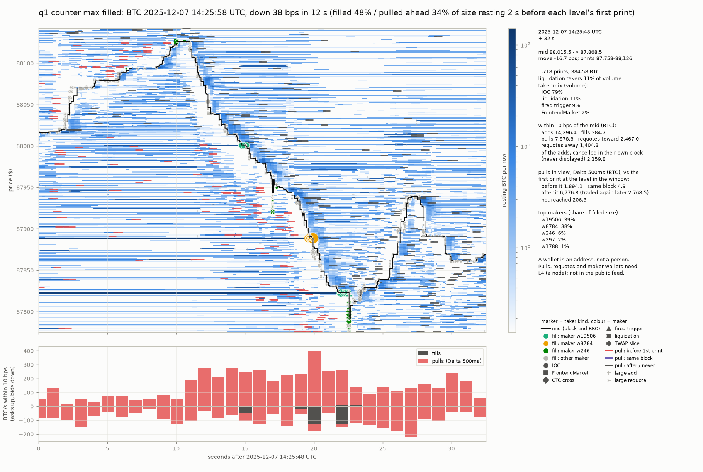
At arrival, traversed levels held far less than calm levels at the same distance, although 5 s earlier they looked ordinary
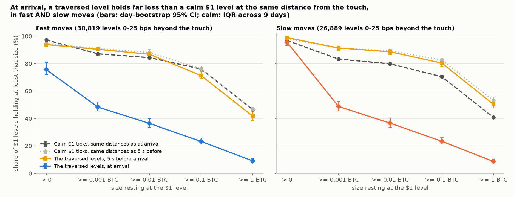
ObservationAt arrival 23% of traversed levels held ≥ 0.1 BTC, against 76% of calm levels at the same distances; 5 s earlier the same levels held 71%. Levels were reached by sweeps: a median 21 levels were first printed at the same instant in fast moves.
InterpretationWhy they were thin is not identified: a sweep runs through a stretch because it is thin at that moment. For a trader, the size shown a few dollars ahead in a fast market is not what a sweep will meet.
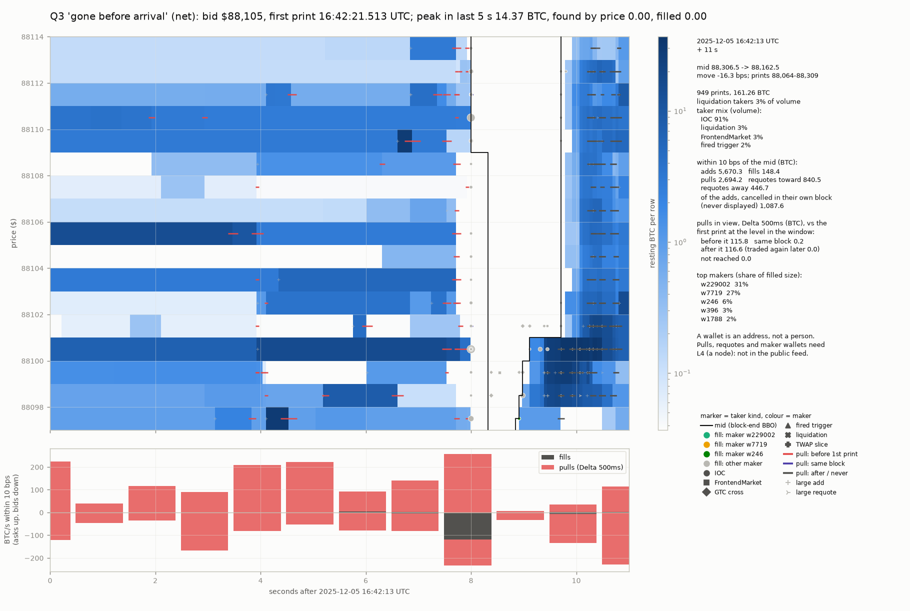
Fast moves are taken disproportionately by fired stops and liquidations
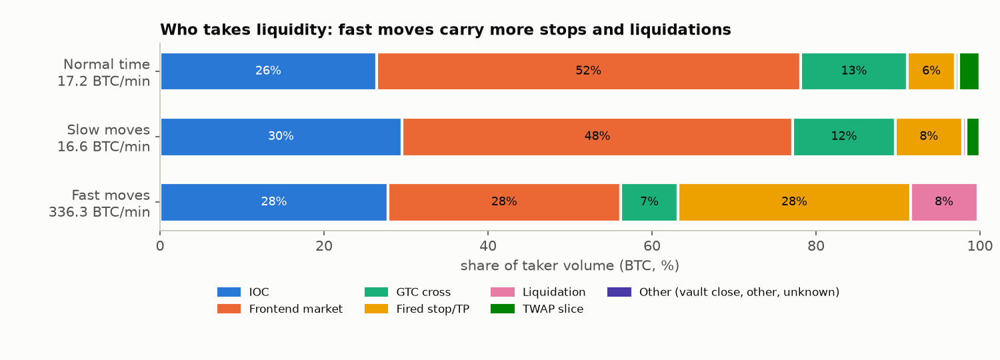
| Taker kind | Fast moves | Normal time |
|---|---|---|
| fired stop / TP | 28% [22–40] | 6% |
| liquidation | 8% [4–13] | 0.4% |
| frontend market orders | 28% [21–34] | 52% |
InterpretationAbout a third of fast-move volume is flow that does not choose its price. The direction of cause is not identified.
B-L4 The public tape has no taker type and no liquidation flag.
After a fast move, depth near price comes back slowly
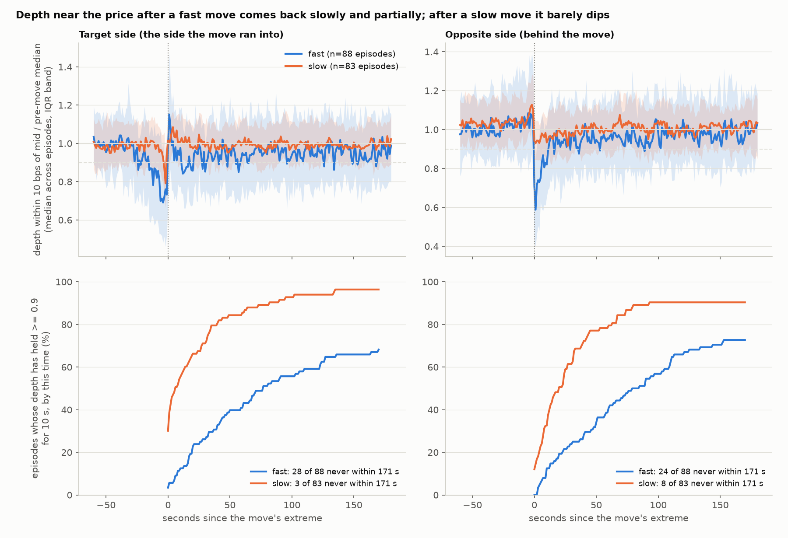
ObservationTime to hold ≥ 90% of pre-move depth for 10 s: 77 s [55–110] after a fast move, with 28 of 88 not within ~3 min; 6 s after a slow move. The same quoters refill, adding faster than before the move.
InterpretationThis mixes slow refill with continued volatility, since many fast moves have a second leg. An earlier "back in ~3 s" reading was noise and was withdrawn.
Breakouts from a range
213 breakout attempts on 16 odd days, detected with the product's 1Box range engine on 1m candles: 100 successes (half a box beyond the edge within 30 min, median 13 bps) and 113 failures, plus 36 sweeps, 182 boundary tests, 542 ordinary ≥ 5 bps moves and 320 random seconds. Success and failure are only known afterwards, so every comparison describes what happened.
Depth just beyond the edge did not separate breaks that worked from those that failed
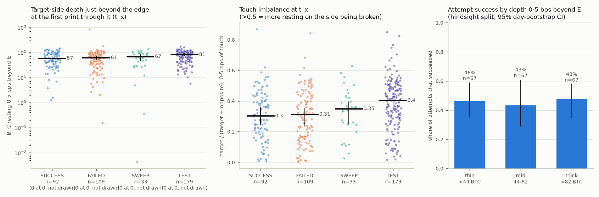
ObservationResting 0–5 bps beyond the edge at first contact: 57 BTC [44–71] on successes vs 61 BTC [50–73] on failures. Success rate by depth tercile: 46% / 43% / 48%.
A
The displayed edge trades far less than it shows, as does any level price approaches
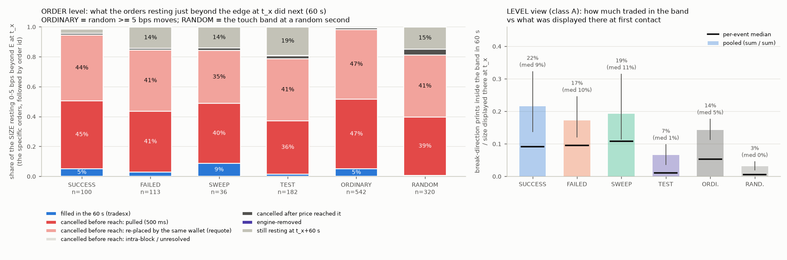
ObservationOf the size resting 0–5 bps beyond the edge at contact on successful breaks, 5.2% was filled in the next 60 s and 89% was cancelled before price reached it, about half pulled and half re-placed by the same wallet. Ordinary ≥ 5 bps moves look the same: 5.0% filled, 93% cancelled first.
InterpretationExpect roughly a tenth of the size shown just past a range edge to trade there in the next minute. It is generic churn at any approached level, not a range-edge property.
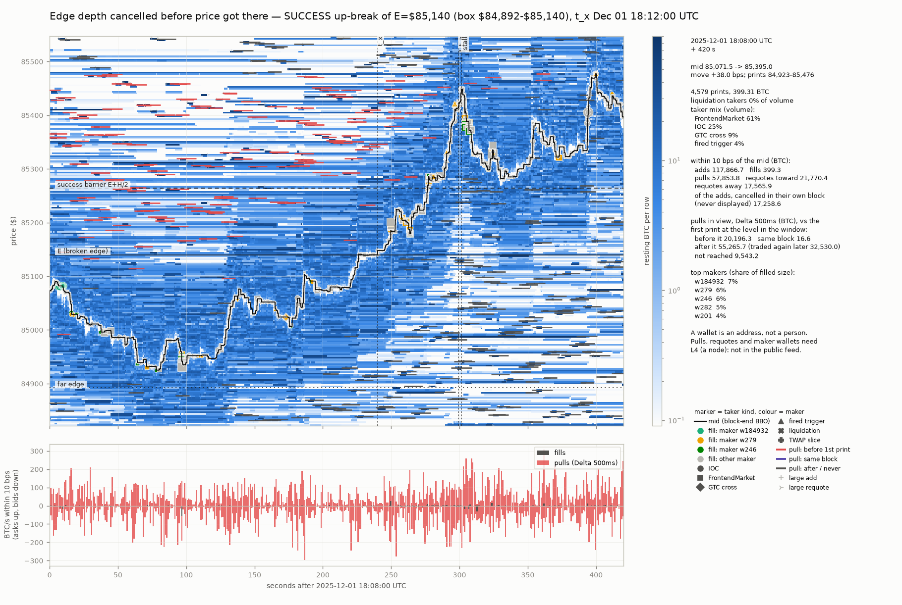
The side behind price thinned after contact, as it does after any move
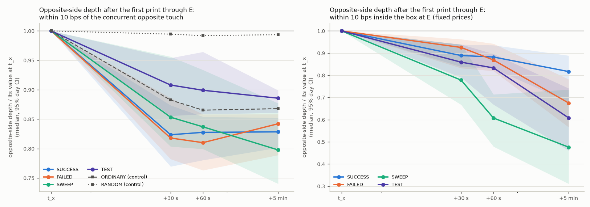
ObservationDepth within 10 bps of the opposite touch, 30 s after contact vs at contact: success 0.82×, failure 0.82×, ordinary moves 0.88×, random seconds 0.99×.
InterpretationNo "bids stepping in behind the break" pattern marked successes.
Fired stops were a large, lumpy part of break volume, and resting stops did not predict the outcome
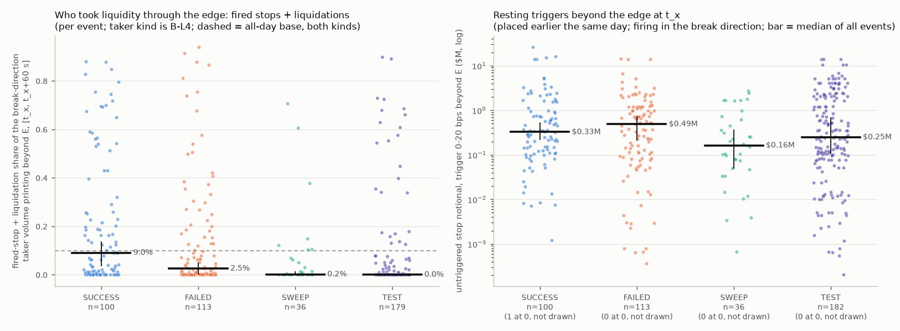
ObservationPer-event median share of break volume from fired stops and liquidations in the first minute: 9.0% on successes, 2.5% on failures, but pooled over events failures were at least as stop-heavy (27.3% vs 24.7%), and the biggest flushes were failures. Stops resting 0–20 bps beyond the edge: $0.33 M vs $0.49 M; success rate by stop-fuel tercile 46% / 52% / 42%.
InterpretationStops that fire are largely a consequence of how far price goes.
B-L4 · B-addr a known address's resting stops
At the first stall after a break, the book looked like the book at any local extreme
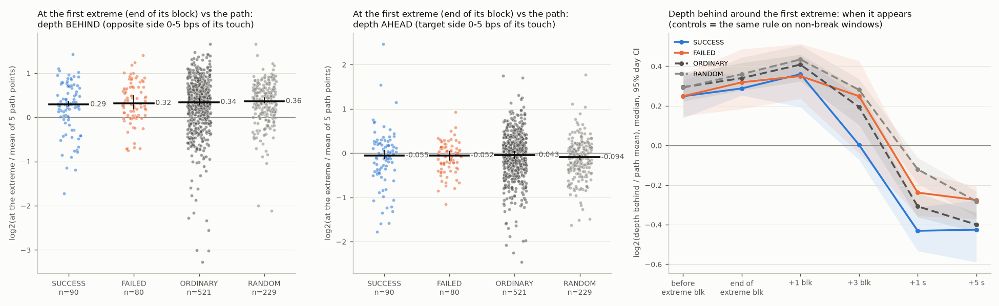
ObservationDepth behind price at the stall vs along the path: 1.22× after successes, 1.27× on ordinary moves, 1.28× on random windows. One second later it was 0.74×. Depth ahead was ordinary.
InterpretationPrice did not visibly stop at a wall ahead. The "thicker book behind" comes from how an extreme is picked; an earlier reading of it as makers defending was withdrawn.
Absorption and large displayed orders
265 absorption episodes on 14 odd days: 15 s windows with ≥ $6.07 M net one-sided aggression and price progress in the bottom decile. 301,221 "walls": single orders at the 99.9th size percentile for their distance.
The level that took the aggression was almost always used up
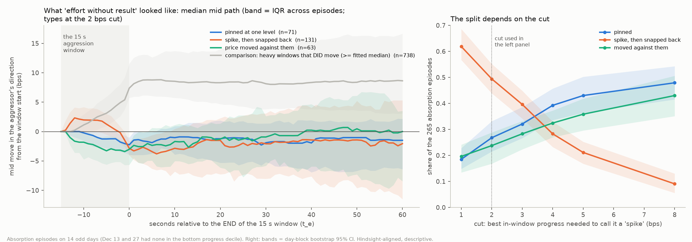
ObservationAt the end of the window a median 2% of the absorbing level's peak size was still resting. Of 265 episodes the level was consumed in 186, pulled in 60, sustained in 8, and held with light size in 8.
InterpretationHeavy aggression that fails to move price reliably finds a level that gets consumed, not a wall that stays. Where the mid stayed pinned, it was usually many makers re-forming the book.
What followed absorption showed no detectable direction
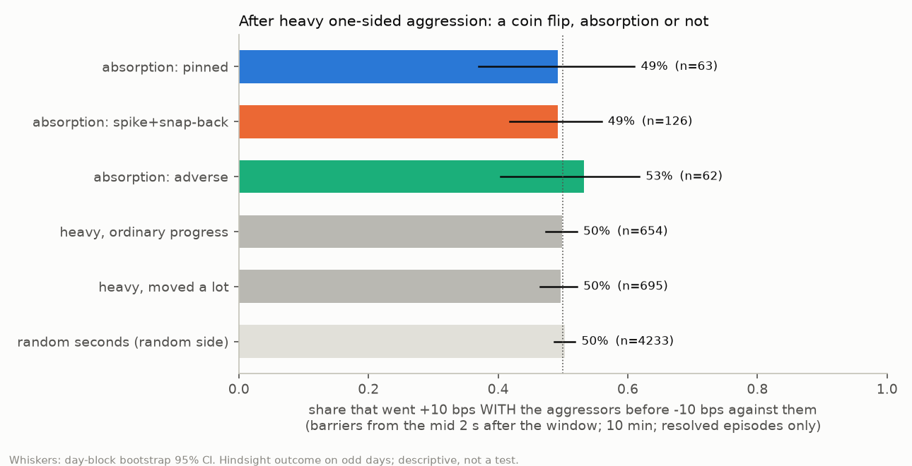
ObservationPrice went ±10 bps with the aggressors first in 50.2% [44.6–54.9] of absorption episodes, 49.6% after heavy aggression that did move price, and 50.2% at random seconds.
Interpretation"Effort without result" was not a hold signal. The only lean, at ±5 bps (55.9%), points toward continuation. This agrees with the product's own Tape S/R finding that retests carrying "pressure" held less often.
A
Many of the biggest absorbing orders were position-closing or triggered stop orders
ObservationReduce-only orders supplied 29.5% of the size filled at the absorbing price, against 8.8% of all maker fills; triggered stop-limit orders supplied 10%. Same-price refill within 1 s was rarer at the absorbing price (6.8%) than at ordinary touch fills (13.9%).
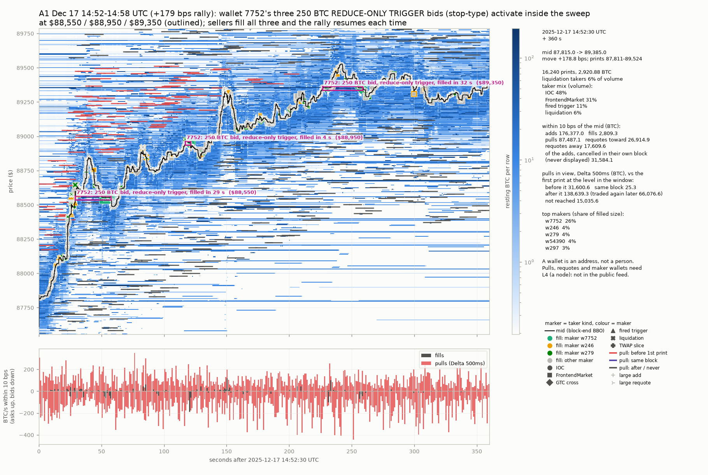
InterpretationA big bid that appears inside a fast move may be a triggered stop or a closing limit, not a defender. This describes order flags, not intent.
B-addr A known address's reduce-only and trigger orders are visible before they fire.
Large displayed orders are mostly one kind of algorithm; when price actually reaches one, it usually trades
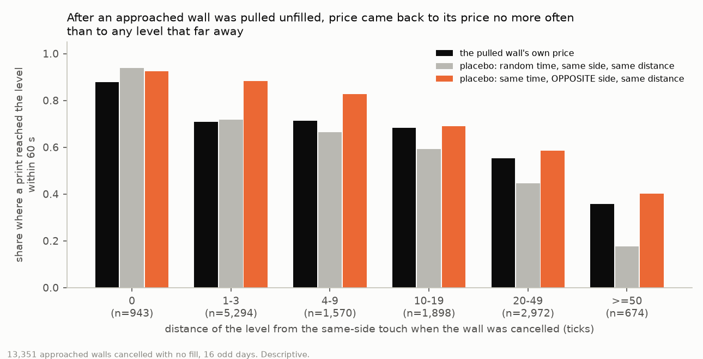
Observation99.3% of walls were cancelled and only 5.5% were ever approached within 3 ticks; 74% came from three wallets active Dec 1–7 whose orders lived ~2 s. Of 2,223 walls placed ≥ 4 ticks away that price later reached, 63% got a fill. Owners whose walls usually filled on earlier days got a fill 96% of the time, against 45% for owners who usually cancelled. After a wall was pulled unfilled, price reached its price about as often as a placebo level (66.5% vs 62.1%).
InterpretationWhether a wall trades depends on where it was placed and who placed it. A pulled wall did not mark where price was heading.
A size · B-addr owner history
Liquidity-provider wallets
16 odd days: 6.53 M maker fills ($46.2 B) by 16,036 maker addresses, and 2,297 book snapshots.
Near-price depth sits with a few addresses
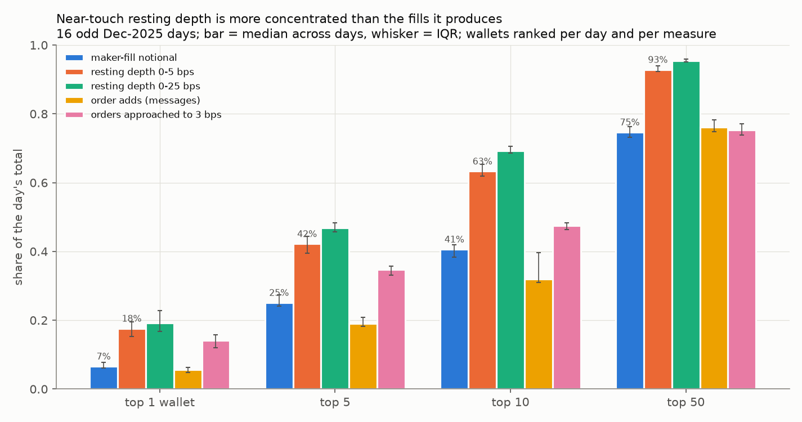
ObservationThe 10 largest holders own 63% of resting BTC within 5 bps of the mid; 50 own 93%. The top 10 makers take 41% of maker fills. One address was the largest maker on 11 of 16 days and held ~18% of near-touch depth.
A fill concentration · B-L4 ownership of displayed depth
Makers fall into types that split depth and fills very differently
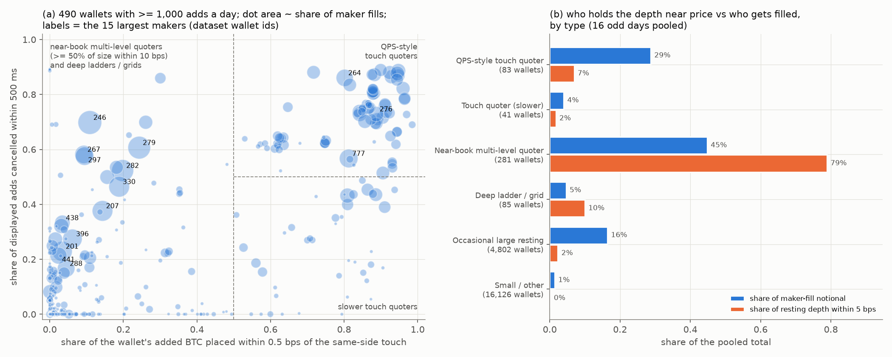
| Type | Addresses | Depth within 5 bps | Maker fills |
|---|---|---|---|
| near-book multi-level quoters | 281 | 79% | 45% |
| touch quoters (cancel 78% of adds within 500 ms) | 83 | 7% | 29% |
| occasional large resting wallets | 4,802 | 2% | 16% |
When price comes to an order, whether it stays depends on its owner
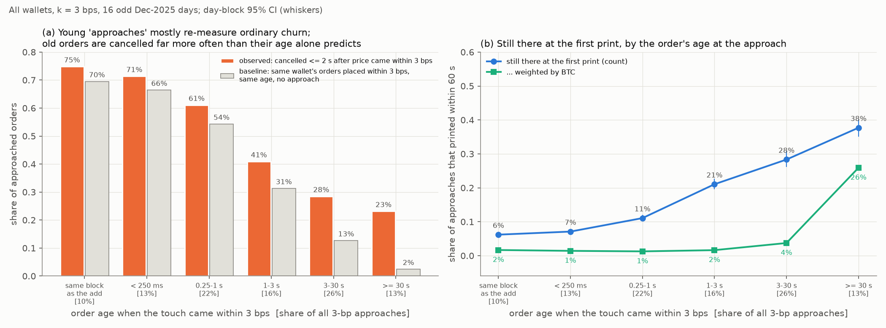
ObservationOf orders resting ≥ 3 s when the touch came within 3 bps, 32% by count and 9% by BTC were still there at the first print. A split-half check (types set on Dec 1–15, outcomes on Dec 17–31): near-book quoters were still there 26% of the time (68% expected from ordinary churn); slow wallets 97% (95% expected).
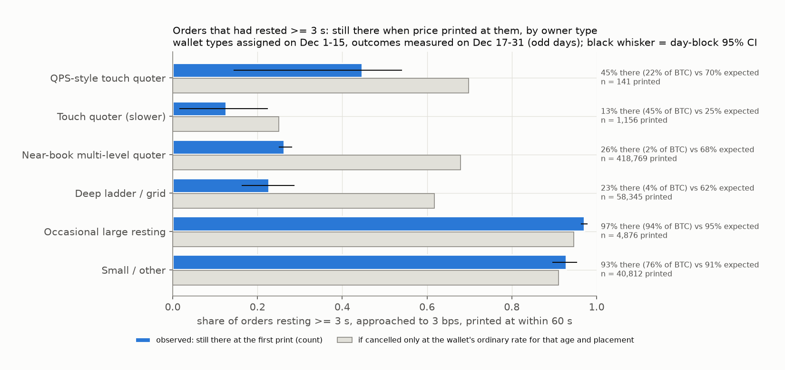
InterpretationHigh-frequency addresses withdraw or move size as price approaches, well beyond their normal churn. The size that stays belongs to slow addresses. Orders ≥ 10 BTC were still there 94% of the time when a slow wallet owned them, 14% when a near-book quoter did, and the public book does not show the owner.
B-L4 · B-addr for up to 10 followed addresses
After a fill, price on average drifted against the makers who waited
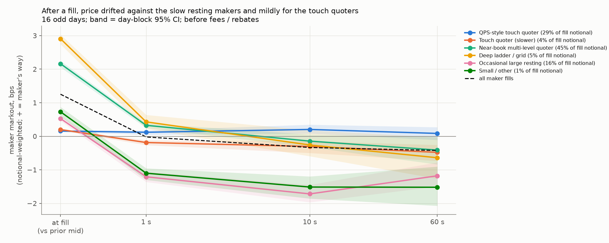
ObservationSlow resting wallets: −1.7 bps at 10 s (notional-weighted, before fees). Touch quoters: about flat (+0.2). Single fills are very noisy (IQR ~9 bps at 60 s).
Who the makers are is stable; how well their fills do is not
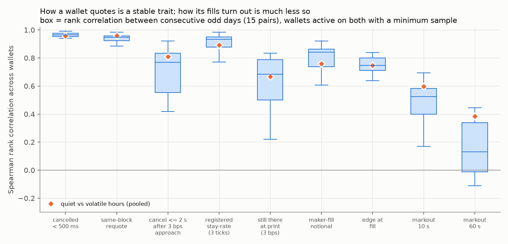
ObservationHow a wallet quotes has a day-to-day rank correlation of 0.93–0.96. Ten makers chosen on earlier days covered 38% of the next day's maker fills and 52% of its near-touch depth. Fill markouts are not stable (0.13 at 60 s).
InterpretationThe data supports a watch list of which addresses are the book. It does not support a ranking of "informed" makers.
Does anything predict the next move at a manual delay?
Three event families on 16 odd days: 2,820 execution bursts (≥ $2.56 M net in 5 s), 9,930 sweeps (≥ 2 bps through the book in one block) and 25,475 near-touch pull bursts. Entries at 0, 2 and 5 s, compared with ordinary seconds that had the same trailing HL and Binance moves.
HL's mid trails Binance by about 0.7 s, on every day
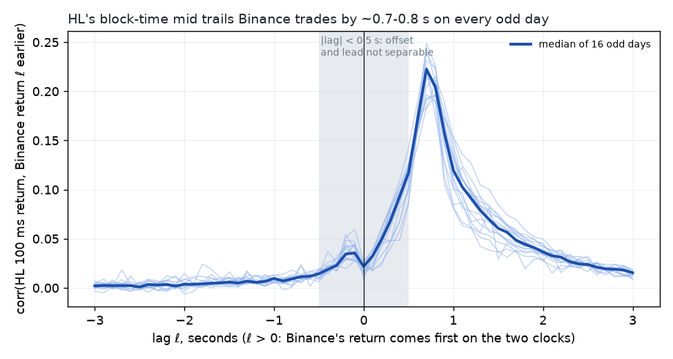
Observation100 ms returns correlate best with Binance 700–800 ms earlier on all 16 days. For 1 s returns the correlation is 0.30 in the same second and 0.64 with Binance's previous second. Events Binance led moved no more than ordinary seconds with the same Binance move.
InterpretationThe information is in the Binance move, not the HL event, and 0.7 s is below the manual reaction floor. A clock offset and a true lead cannot be separated.
A
By the time a burst is visible, the move has mostly happened
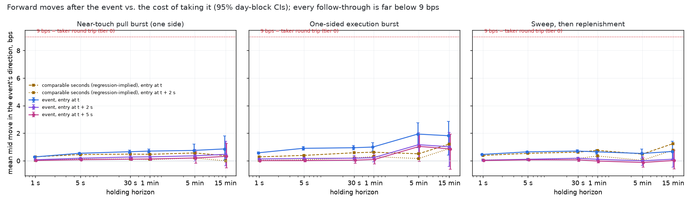
ObservationBefore an execution burst the mid had already moved +7.4 bps over the prior minute. Beyond comparable seconds: +0.51 bps over the next 5 s, but −0.08 over the minute from t + 2 s. Pull bursts: +0.20 bps from t + 2 s. Sweeps: −0.24.
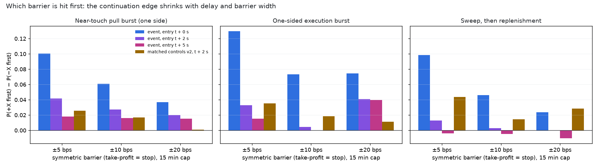
InterpretationA symmetric ±5, ±10 or ±20 bps bracket entered at t + 2 s resolves about 50/50 in every family and loses 9–10 bps net of fees. These events tell you a move is happening now, not that it will continue.
Other patterns
Flicker: about half the near-touch orders live under 500 ms
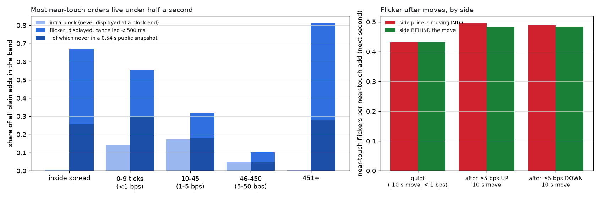
ObservationOf adds placed from inside the spread to ~5 bps away (445 M adds in all), 49% were displayed and cancelled within 500 ms, and about half of those never appeared in a single public snapshot. After a ≥ 5 bps move flicker rose on both sides.
InterpretationDisplayed size at the touch is what the quoting algorithms show this half-second. The rise after a move is symmetric, so it signals activity, not direction.
B-L4
Round numbers and "third time lucky" are not special on this data
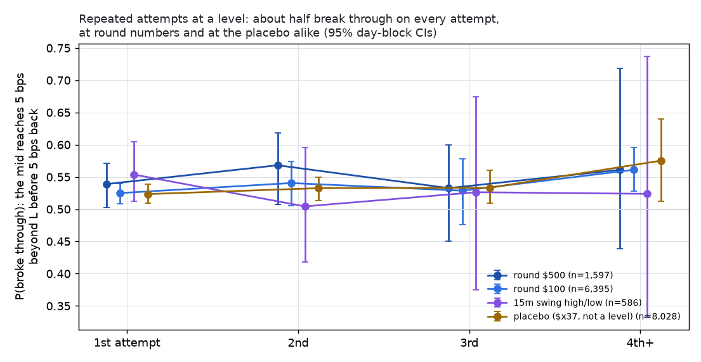
ObservationFirst-attempt break-through: round $100 levels 52.5%, placebo prices ($x37) 52.3%, round $500 54%, 15m swings 55% (16,606 attempts). Later attempts differ by a few points, and the placebo shows the same pattern.
Around fast moves the taker side turns mechanical, and makers re-quote harder rather than leave
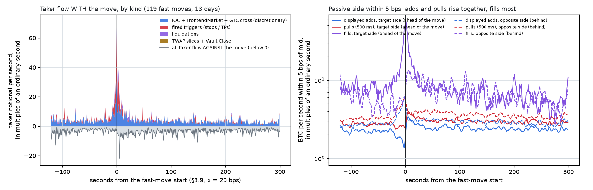
ObservationFired stops plus liquidations were 26% of with-move taker flow in the 30 s before a fast move was detected (at 20 bps, so that window can include the move's first seconds) and 41% in its first minute, against ~8% in ordinary seconds. Within 5 bps of the mid, makers added and pulled 2–4× their usual volume on both sides.
Stop cascades come in batches on a ~3 s clock, and stops fill past their trigger
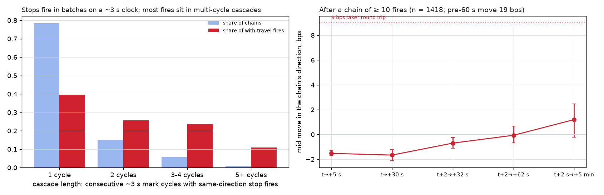
ObservationOf 93,207 fired triggers, gaps between fire batches pile up at 3, 6 and 9 s; only 0.9% are under 2 s. Stop fills land a median 1.8 bps past the trigger (p95 10.6). A batch is followed by another within 4 s about twice as often as a comparable moment.
InterpretationThe ~3 s rhythm is consistent with Hyperliquid's mark-price updates (triggers fire on the mark price); that cause is an inference. The usable parts for a manual trader are the rhythm and the slippage.
A the pulse of prints · B-L4 which prints are stops
What changed after independent review
Each section was checked by a separate skeptic before this report. These readings were withdrawn or reversed:
- Depth "back in ~3 s" after a fast move was noise in per-second data. With a persistence rule it is a median 77 s.
- "Pulled 3× faster ahead of fast moves" is a per-second effect of price speed; per level the total is the same.
- A "thicker book behind price" at the first stall after a break comes from how an extreme is picked; it is gone 1 s later.
- Blinking levels being "reached more often" was volatility.
- A four-way "why was this level thin" split was not interpretable: withdrawal and sweep timing cannot be separated in hindsight.
Open questions
| Question | What would resolve it |
|---|---|
| Why are levels thin when a sweep arrives? | The book at a moment known live, against matched moments with no sweep (registered cell H09) |
| Did Binance precede the pulls ahead of fast moves? | Apply the 0.7 s lead-lag to the per-level pull timing |
| How much "pulled" is really cleanup or requote? | The registered robustness labels on the sealed half |
| Does stop fuel beyond an edge predict follow-through? | H19 and E2 on the sealed half |
| Does single-maker absorption hold better than a vanishing display? (5/15 vs 26/48, p = 0.24) | H11 on the sealed half |
| Does an owner's history beat a book-only model for "will this wall trade"? | Fit on odd days, test on even days (H14, H15) |
| Are December's top maker addresses active today? | A live per-address check |
| Do rejected post-only orders carry information? | The rejected-orders archive (not downloaded; invisible live anyway) |
Caveats
- Discovery half only. 16 odd December days; the fast-move section uses Dec 1–17. Intervals rest on 8–16 day clusters and are rough. One month, in a downtrend, with thin holidays.
- Hindsight-aligned splits. Fast moves chosen by size, levels chosen because price reached them, breakout success and failure, "approached" orders. None of these is a live feature.
- Labels are choices. Pull versus requote depends on the time window; thresholds change shares. The robust statements are the ones reported across cuts.
- Fees. Returns are on the mid and before fees unless stated. Maker markouts exclude the 1.5 bps maker fee.
- A wallet is an address. Nothing here identifies a person, a firm or an intent.
What happens next
A pre-registered confirmatory test runs on the 15 sealed even days: 20 primary hypotheses and 34 fixed trade specifications, every one with a stop, costed at taker and maker fees. The sealed half is opened once, after a second freeze of the claims to be tested. The final report will rank each idea as supported, suggestive, or not supported.